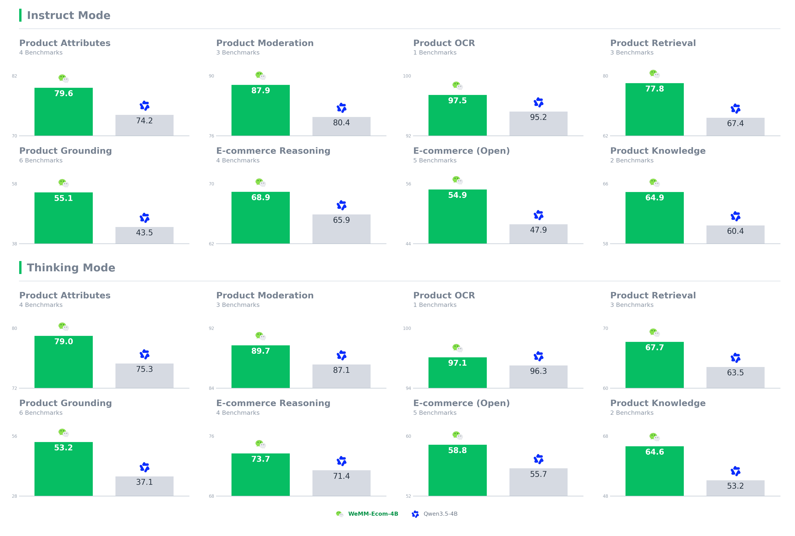
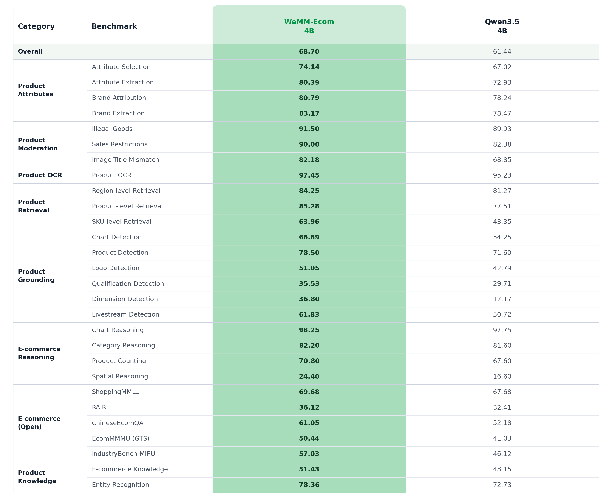
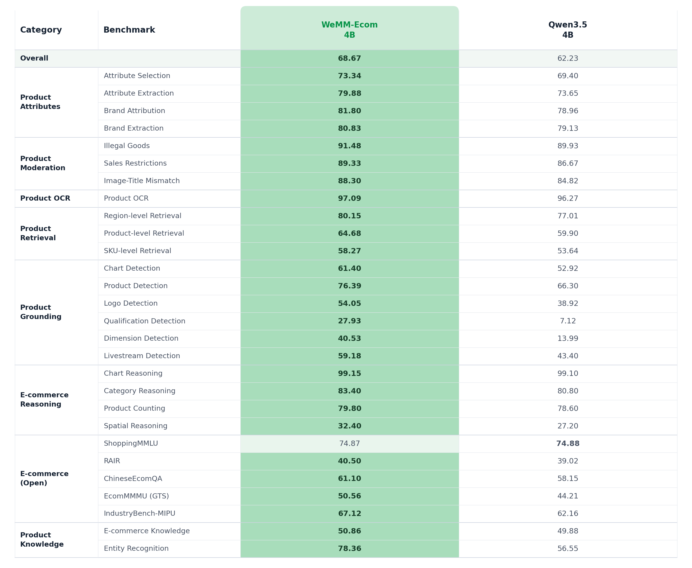
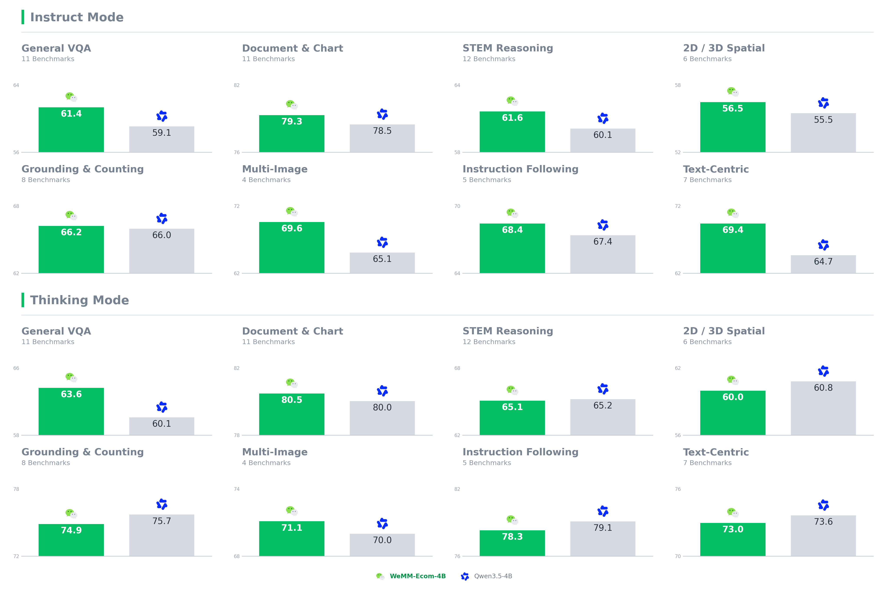
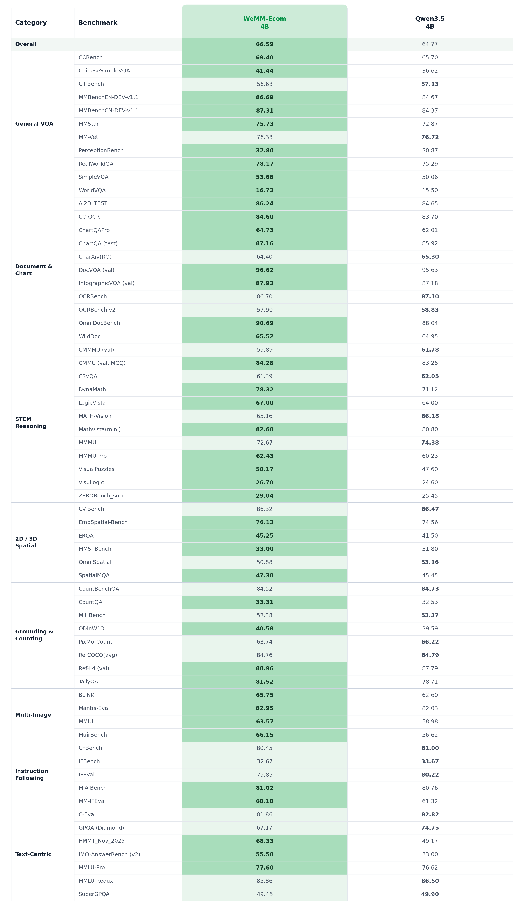
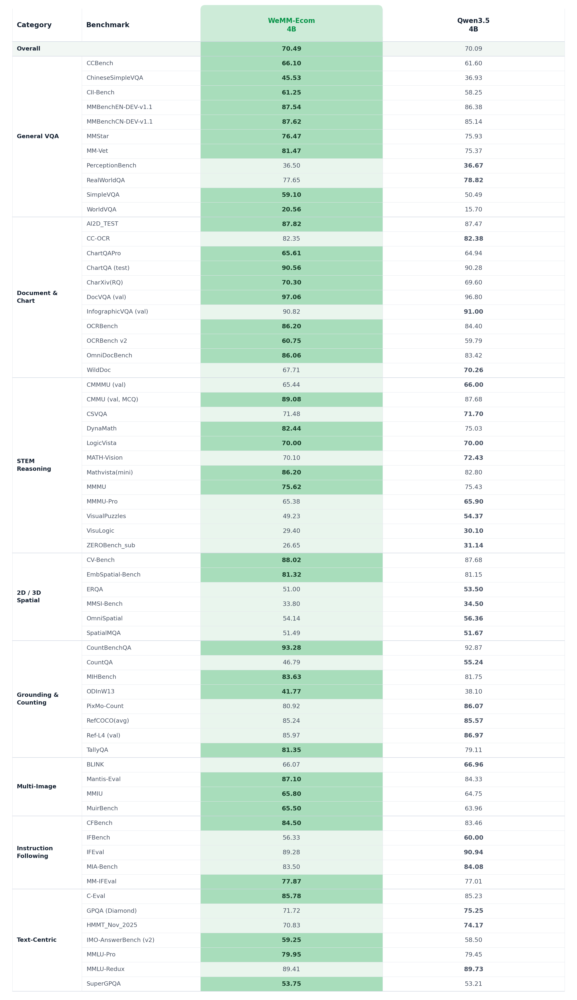

WeMM-Ecom-4B
<b>Advancing Multimodal Content Understanding for WeChat E-Commerce</b>
Hugging Face Model Collection Technical Report GitHub: WeMM-Ecom Hugging Face Paper
Evaluation · Quick Start · Best Practices
WeMM-Ecom-4B is a 4B-scale dense model in the WeMM-Ecom family developed by WeChat Vision, Tencent. It combines fine-grained e-commerce understanding with broad visual-language and reasoning capabilities and supports hybrid thinking.
The WeMM-Ecom family delivers leading e-commerce performance, with WeMM-Ecom-35B-A3B outperforming open-source models with hundreds of billions of parameters. Across model sizes, it also maintains general-purpose capabilities on par with state-of-the-art models of comparable size.
Highlights
- E-commerce understanding: Outperforms Qwen3.5-4B by 6.47 points in average benchmark score.
- Broad general capabilities: Outperforms Qwen3.5-4B by 0.40 points in average benchmark score.
- Flexible deployment: text, image, multi-image, and video inputs; BF16, FP8, GPTQ, and GGUF formats.
Model Overview
- Architecture: 4B dense model.
- Context window: 262,144 tokens.
- Checkpoint: BF16 Safetensors.
Model family: 0.8B · 2B · 4B · 9B · 35B-A3B
Quantized formats: FP8 · GPTQ · GGUF
Evaluation
We evaluate e-commerce understanding on 28 benchmarks across eight scenarios and general capabilities on 64 benchmarks across eight categories. All scores use a 0–100 scale, with higher values indicating stronger performance.
E-commerce Benchmarks
The suite covers product attributes, moderation, OCR, retrieval, grounding, reasoning, public e-commerce benchmarks, and product knowledge.

<b>Full e-commerce benchmark results</b>
Instruct Mode

Thinking Mode

General Benchmarks
The suite spans general VQA, document and chart understanding, STEM reasoning, spatial understanding, grounding and counting, multi-image understanding, instruction following, and text-centric tasks.

<b>Full general benchmark results</b>
Instruct Mode

Thinking Mode

Quick Start
Run WeMM-Ecom with Transformers, or use either of the OpenAI-compatible serving options below. Replace the local image and video paths with your own content.
Choose sampling settings by mode and task. The examples below use the general-task settings; see Best Practices for additional recommended profiles and output budgets.
Transformers
Installation
The commands below use Python 3.11 as an example environment. For other Python versions, follow the requirements of your Transformers and PyTorch releases. uv selects the PyTorch backend for your machine.
bashpython3.11 -m venv .venv-transformers source .venv-transformers/bin/activate pip install -U pip uv uv pip install -U "transformers>=5.2.0" accelerate torch torchvision pillow --torch-backend=auto
Authentication and local checkpoints
For repositories that require authentication, sign in once. You can also download a checkpoint to a local directory:
bashpip install -U huggingface_hub hf auth login hf download tencent/WeMM-Ecom-4B --local-dir ./WeMM-Ecom-4B
To use the downloaded checkpoint, set model_id = "./WeMM-Ecom-4B" in the loading example below. Both the model and processor accept the same local directory.
Load the Model
Load the processor and model once. The following examples share these objects and generation settings.
pythonimport torch from transformers import AutoModelForImageTextToText, AutoProcessor model_id = "tencent/WeMM-Ecom-4B" processor = AutoProcessor.from_pretrained(model_id) model = AutoModelForImageTextToText.from_pretrained( model_id, dtype=torch.bfloat16, device_map="auto", ).eval() enable_thinking = True generation_kwargs = { "max_new_tokens": 4096, "do_sample": True, "top_k": 20, "min_p": 0.0, "repetition_penalty": 1.0, } def split_output(text, thinking): if not thinking: return "", text.strip() reasoning, closed, answer = text.partition("</think>") return reasoning.removeprefix("<think>").strip(), answer.strip() if closed else ""
The examples print the final answer. In Thinking Mode, reasoning_text contains the reasoning and the final answer starts after </think>.
Image Understanding
Describe an image and its visible details:
pythonmessages = [{ "role": "user", "content": [ {"type": "image", "image": "./product.jpg"}, {"type": "text", "text": "Briefly describe the main subjects and their visible attributes."}, ], }] inputs = processor.apply_chat_template( messages, tokenize=True, add_generation_prompt=True, enable_thinking=enable_thinking, return_dict=True, return_tensors="pt", ).to(model.device) with torch.inference_mode(): outputs = model.generate( **inputs, **generation_kwargs, temperature=1.0 if enable_thinking else 0.7, top_p=0.95 if enable_thinking else 0.8, ) new_tokens = outputs[:, inputs["input_ids"].shape[1]:] decoded = processor.batch_decode( new_tokens, skip_special_tokens=True, clean_up_tokenization_spaces=False, )[0] reasoning_text, final_text = split_output(decoded, enable_thinking) print(final_text)
Hybrid Thinking
- Instruct Mode: set
enable_thinking=Falsefor a direct response; usetemperature=0.7andtop_p=0.8. - Thinking Mode: set
enable_thinking=Truefor reasoning followed by the final answer; usetemperature=1.0andtop_p=0.95.
The checkpoint default is Thinking Mode. All examples pass the switch explicitly. To change modes, update enable_thinking; the conditional sampling arguments in each generate() call follow it automatically.
Text-only Conversations
pythonmessages = [{"role": "user", "content": [{ "type": "text", "text": "List the key attributes used to distinguish product variants.", }]}] inputs = processor.apply_chat_template( messages, tokenize=True, add_generation_prompt=True, enable_thinking=enable_thinking, return_dict=True, return_tensors="pt", ).to(model.device) with torch.inference_mode(): outputs = model.generate( **inputs, **generation_kwargs, temperature=1.0 if enable_thinking else 0.7, top_p=0.95 if enable_thinking else 0.8, ) new_tokens = outputs[:, inputs["input_ids"].shape[1]:] decoded = processor.batch_decode( new_tokens, skip_special_tokens=True, clean_up_tokenization_spaces=False, )[0] reasoning_text, final_text = split_output(decoded, enable_thinking) print(final_text)
Multi-Image Understanding
Provide multiple product views in one conversation:
pythonmessages = [{"role": "user", "content": [ {"type": "image", "image": "./product_front.jpg"}, {"type": "image", "image": "./product_back.jpg"}, {"type": "text", "text": "Compare these views and extract the visible variant attributes."}, ]}] inputs = processor.apply_chat_template( messages, tokenize=True, add_generation_prompt=True, enable_thinking=enable_thinking, return_dict=True, return_tensors="pt", ).to(model.device) with torch.inference_mode(): outputs = model.generate( **inputs, **generation_kwargs, temperature=1.0 if enable_thinking else 0.7, top_p=0.95 if enable_thinking else 0.8, ) new_tokens = outputs[:, inputs["input_ids"].shape[1]:] decoded = processor.batch_decode( new_tokens, skip_special_tokens=True, clean_up_tokenization_spaces=False, )[0] reasoning_text, final_text = split_output(decoded, enable_thinking) print(final_text)
Video Understanding
Install a TorchCodec build compatible with your PyTorch installation, and make its supported FFmpeg shared libraries available in the same environment. Follow the TorchCodec installation guide and compatibility table.
bashpip install torchcodec
Check the decoder with your local clip before running the example:
pythonfrom torchcodec.decoders import VideoDecoder decoder = VideoDecoder("./product_demo.mp4", device="cpu") print(len(decoder), decoder[0].shape)
This example samples 16 frames from a product demonstration:
pythonmessages = [{"role": "user", "content": [ {"type": "video", "path": "./product_demo.mp4"}, {"type": "text", "text": "Summarize the product features and actions demonstrated in this clip."}, ]}] inputs = processor.apply_chat_template( messages, tokenize=True, add_generation_prompt=True, enable_thinking=enable_thinking, num_frames=16, fps=None, return_dict=True, return_tensors="pt", ).to(model.device) with torch.inference_mode(): outputs = model.generate( **inputs, **generation_kwargs, temperature=1.0 if enable_thinking else 0.7, top_p=0.95 if enable_thinking else 0.8, ) new_tokens = outputs[:, inputs["input_ids"].shape[1]:] decoded = processor.batch_decode( new_tokens, skip_special_tokens=True, clean_up_tokenization_spaces=False, )[0] reasoning_text, final_text = split_output(decoded, enable_thinking) print(final_text)
For rate-based sampling, replace num_frames=16, fps=None with fps=2.0 and omit num_frames.
Batched Inference
Pass a list of conversations and use left padding. Crop generated tokens at the common padded input width.
pythonprocessor.tokenizer.padding_side = "left" batch_messages = [ [{"role": "user", "content": [ {"type": "image", "image": "./product_front.jpg"}, {"type": "text", "text": "Extract the visible product attributes."}, ]}], [{"role": "user", "content": [{ "type": "text", "text": "Explain the difference between a product and an SKU.", }]}], ] inputs = processor.apply_chat_template( batch_messages, tokenize=True, add_generation_prompt=True, enable_thinking=enable_thinking, padding=True, return_dict=True, return_tensors="pt", ).to(model.device) with torch.inference_mode(): outputs = model.generate( **inputs, **generation_kwargs, temperature=1.0 if enable_thinking else 0.7, top_p=0.95 if enable_thinking else 0.8, ) new_tokens = outputs[:, inputs["input_ids"].shape[1]:] decoded_batch = processor.batch_decode( new_tokens, skip_special_tokens=True, clean_up_tokenization_spaces=False, ) for decoded in decoded_batch: reasoning_text, final_text = split_output(decoded, enable_thinking) print(final_text)
Multi-turn Conversations
Keep the media references in the conversation history and append only the final answer from each assistant turn.
pythonturns = [ [{"type": "image", "image": "./product.jpg"}, {"type": "text", "text": "Describe this product's visible attributes."}], [{"type": "text", "text": "Which attributes should be included in the product title?"}], ] messages = [] for content in turns: messages.append({"role": "user", "content": content}) inputs = processor.apply_chat_template( messages, tokenize=True, add_generation_prompt=True, enable_thinking=enable_thinking, return_dict=True, return_tensors="pt", ).to(model.device) with torch.inference_mode(): outputs = model.generate( **inputs, **generation_kwargs, temperature=1.0 if enable_thinking else 0.7, top_p=0.95 if enable_thinking else 0.8, ) new_tokens = outputs[:, inputs["input_ids"].shape[1]:] decoded = processor.batch_decode( new_tokens, skip_special_tokens=True, clean_up_tokenization_spaces=False, )[0] reasoning_text, final_text = split_output(decoded, enable_thinking) if not final_text: break print(final_text) messages.append({"role": "assistant", "content": [{"type": "text", "text": final_text}]})
Visual Input Settings
The image processor accepts pixel-area bounds through images_kwargs. This example uses a 64–1280 visual-token image budget; the checkpoint's defaults remain available by omitting this override.
pythonspatial_factor = processor.image_processor.patch_size * processor.image_processor.merge_size messages = [{"role": "user", "content": [ {"type": "image", "image": "./product.jpg"}, {"type": "text", "text": "Describe the visible objects and their attributes. Report only text that is clearly legible."}, ]}] inputs = processor.apply_chat_template( messages, tokenize=True, add_generation_prompt=True, enable_thinking=enable_thinking, images_kwargs={"size": { "shortest_edge": 64 * spatial_factor ** 2, "longest_edge": 1280 * spatial_factor ** 2, }}, return_dict=True, return_tensors="pt", ).to(model.device) with torch.inference_mode(): outputs = model.generate( **inputs, **generation_kwargs, temperature=1.0 if enable_thinking else 0.7, top_p=0.95 if enable_thinking else 0.8, ) new_tokens = outputs[:, inputs["input_ids"].shape[1]:] decoded = processor.batch_decode( new_tokens, skip_special_tokens=True, clean_up_tokenization_spaces=False, )[0] reasoning_text, final_text = split_output(decoded, enable_thinking) print(final_text)
Optional FlashAttention 2
For a compatible CUDA setup, follow the FlashAttention installation instructions, then replace the model-loading call above with:
pythonmodel = AutoModelForImageTextToText.from_pretrained( model_id, dtype=torch.bfloat16, device_map="auto", attn_implementation="flash_attention_2", ).eval()
Serving
Choose vLLM or SGLang and install the engine in its own Python environment. Both expose the client API shown below.
The commands use a 32,768-token serving context. The model's native context window is 262,144 tokens. Adjust --max-model-len for vLLM or --context-length for SGLang, together with tensor parallelism, for your deployment.
vLLM
See the vLLM installation guide for the requirements of your chosen release. The commands below use a separate Python 3.11 environment.
bashpython3.11 -m venv .venv-vllm source .venv-vllm/bin/activate pip install -U pip uv uv pip install -U "vllm>=0.31.0" openai --torch-backend=auto MODEL=tencent/WeMM-Ecom-4B vllm serve "$MODEL" \ --served-model-name "$MODEL" \ --tensor-parallel-size 1 \ --max-model-len 32768 \ --reasoning-parser qwen3 \ --port 8000
SGLang
We recommend SGLang 0.5.15 or newer. Use a fresh environment with matching CUDA/PyTorch builds of SGLang and its kernel dependencies, following the SGLang installation guide.
bashpython3.11 -m venv .venv-sglang source .venv-sglang/bin/activate pip install -U pip uv uv pip install -U "sglang>=0.5.15" openai decord MODEL=tencent/WeMM-Ecom-4B python -m sglang.launch_server \ --model-path "$MODEL" \ --served-model-name "$MODEL" \ --tp-size 1 \ --mem-fraction-static 0.8 \ --context-length 32768 \ --reasoning-parser qwen3 \ --port 8000
CUDA 12.9 environment setup
For Linux x86_64 with SGLang 0.5.15 and PyTorch 2.11.0+cu129, follow the CUDA 12.9 override in SGLang's Dockerfile. If an incompatible DeepGEMM build produces an import error mentioning libcudart.so.13, install the matching CUDA 12.9 wheel in the activated environment:
bashpython -m pip install --no-deps --force-reinstall \ "https://github.com/sgl-project/whl/releases/download/v0.1.4/sgl_deep_gemm-0.1.4+cu129-py3-none-manylinux2014_x86_64.whl"
For other SGLang, PyTorch, or CUDA versions, select the corresponding builds from the official installation guide.
OpenAI-compatible API
Install the client where you send requests:
bashpip install -U openai
Set enable_thinking before constructing the shared request settings; rerun this setup when changing modes. Local media are encoded in the client so the server does not need access to their file paths.
pythonimport base64 from pathlib import Path from openai import OpenAI client = OpenAI(base_url="http://localhost:8000/v1", api_key="EMPTY") enable_thinking = True request_kwargs = { "model": "tencent/WeMM-Ecom-4B", "max_completion_tokens": 4096, "temperature": 1.0 if enable_thinking else 0.7, "top_p": 0.95 if enable_thinking else 0.8, "presence_penalty": 1.5, "extra_body": { "top_k": 20, "min_p": 0.0, "repetition_penalty": 1.0, "chat_template_kwargs": {"enable_thinking": enable_thinking}, }, } def media_url(path, mime_type): data = base64.b64encode(Path(path).read_bytes()).decode("ascii") return f"data:{mime_type};base64,{data}" def show_response(response): message = response.choices[0].message reasoning = getattr(message, "reasoning", None) or getattr(message, "reasoning_content", None) if reasoning: print("Reasoning:\n" + reasoning) answer = message.content or "" print("Answer:\n" + answer) return answer
Image Requests
pythonmessages = [{"role": "user", "content": [ {"type": "image_url", "image_url": {"url": media_url("./product.jpg", "image/jpeg")}}, {"type": "text", "text": "Describe this product and extract its visible attributes."}, ]}] response = client.chat.completions.create(messages=messages, **request_kwargs) final_text = show_response(response)
Text Requests
pythonmessages = [{"role": "user", "content": "List five attributes that distinguish product variants."}] response = client.chat.completions.create(messages=messages, **request_kwargs) final_text = show_response(response)
Multi-Image Requests
pythonmessages = [{"role": "user", "content": [ {"type": "image_url", "image_url": {"url": media_url("./product_front.jpg", "image/jpeg")}}, {"type": "image_url", "image_url": {"url": media_url("./product_back.jpg", "image/jpeg")}}, {"type": "text", "text": "Compare these product views and extract the visible attributes."}, ]}] response = client.chat.completions.create(messages=messages, **request_kwargs) final_text = show_response(response)
Video Requests
Use the engines' video_url input with a local MP4 clip:
pythonmessages = [{"role": "user", "content": [ {"type": "video_url", "video_url": {"url": media_url("./product_demo.mp4", "video/mp4")}}, {"type": "text", "text": "Summarize the visible events in this product demonstration."}, ]}] response = client.chat.completions.create(messages=messages, **request_kwargs) final_text = show_response(response)
Multi-turn Requests
Send the conversation history with each request and keep only the final answer in assistant messages.
pythonturns = [ [{"type": "image_url", "image_url": {"url": media_url("./product.jpg", "image/jpeg")}}, {"type": "text", "text": "Describe this product's visible attributes."}], "Which details should be included in the product title?", ] history = [] for content in turns: history.append({"role": "user", "content": content}) response = client.chat.completions.create(messages=history, **request_kwargs) final_text = show_response(response) if not final_text: break history.append({"role": "assistant", "content": final_text})
Streaming Responses
pythonmessages = [{"role": "user", "content": [ {"type": "image_url", "image_url": {"url": media_url("./product.jpg", "image/jpeg")}}, {"type": "text", "text": "Describe this product and extract its visible attributes."}, ]}] stream = client.chat.completions.create(messages=messages, stream=True, **request_kwargs) channel = None for chunk in stream: if not chunk.choices: continue delta = chunk.choices[0].delta reasoning = getattr(delta, "reasoning", None) or getattr(delta, "reasoning_content", None) for label, text in [("Reasoning", reasoning), ("Answer", delta.content)]: if not text: continue if label != channel: print(f"\n{label}:\n", end="") channel = label print(text, end="", flush=True) print()
Best Practices
Sampling Parameters
Choose a profile by mode and task. The following settings are starting points drawn from our evaluation configurations.
- Instruct Mode — general tasks:
temperature=0.7,top_p=0.8,top_k=20,min_p=0.0,presence_penalty=1.5,repetition_penalty=1.0. - Instruct Mode — structured outputs, such as attribute selection, product detection, and SKU matching:
temperature=0.7,top_p=0.8,top_k=20,min_p=0.0,presence_penalty=0.0,repetition_penalty=1.0. - Instruct Mode — reasoning tasks:
temperature=1.0,top_p=1.0,top_k=40,min_p=0.0,presence_penalty=2.0,repetition_penalty=1.0. - Thinking Mode — general tasks:
temperature=1.0,top_p=0.95,top_k=20,min_p=0.0,presence_penalty=1.5,repetition_penalty=1.0. - Thinking Mode — OCR, entity recognition, and SKU matching:
temperature=1.0,top_p=0.95,top_k=20,min_p=0.0,presence_penalty=2.0,repetition_penalty=1.05.
Use the OpenAI-compatible examples to apply all listed parameters. Pass temperature, top_p, and presence_penalty directly, and put top_k, min_p, and repetition_penalty in extra_body. The native Transformers examples use do_sample=True and omit presence_penalty from generate().
Mode and Output Settings
- Select the mode explicitly: use
enable_thinking=Falsefor Instruct Mode andenable_thinking=Truefor Thinking Mode. In the serving API, pass this switch throughchat_template_kwargsinextra_body. - Allow enough output tokens: our evaluations use a maximum generation budget of 65,536 tokens. The Quick Start uses 4,096 tokens for a compact example; increase this budget for longer reasoning. Set
max_new_tokensin Transformers ormax_completion_tokensin the serving API. The serving context limit must accommodate both the input and the generated output. - Specify the output format: for extraction, matching, and grounding, state the required fields, labels, and coordinate format. For multiple-choice tasks, request a clear final answer. In multi-turn conversations, append the assistant's final answer to the history.
Citation
If you find WeMM-Ecom useful, please consider starring our GitHub repository and citing our technical report.
bibtex@misc{wemm-ecom-2026, title = {WeMM-Ecom: Advancing Multimodal Content Understanding for WeChat E-Commerce}, author = {Binhui Xie and Jinmin Li and Haomiao Tang and Guangting Wang and Song Jin and Jianwei Zhu and Fengyun Rao and Jing LYU}, year = {2026}, url = {} }
License
The model weights are licensed under Apache-2.0, except for the third-party components listed in LICENSE, which retain their respective original licenses. See that file for the full terms, notices, and dependencies.
Acknowledgements
We thank the Qwen team for the Qwen3.5 foundation and the open-source community for the tools and benchmarks used in this project.